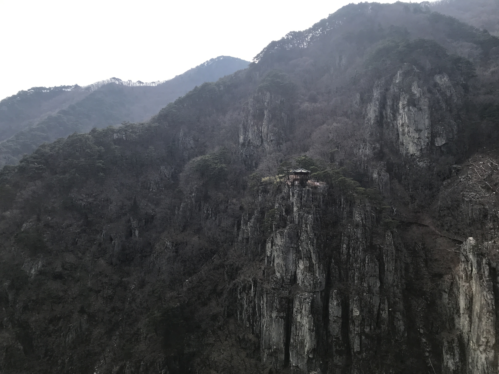
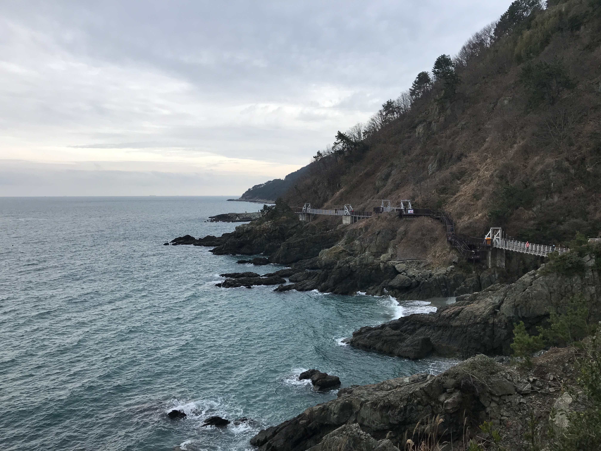
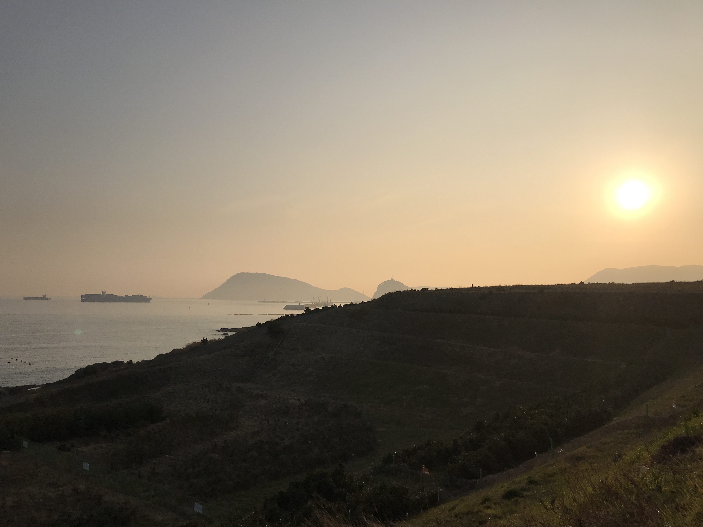

snapshots of my life
scroll for pictures, tap/hover for info

pohang, south korea
2.21.20

igidae walk, busan
2.15.20

busan, south korea
2.14.20

law library, uiuc
12.14.19

chatham, il
9.30.18

snyder hall, uiuc
9.26.18

savoy, il
9.14.18

sausalito, ca
07.14.18